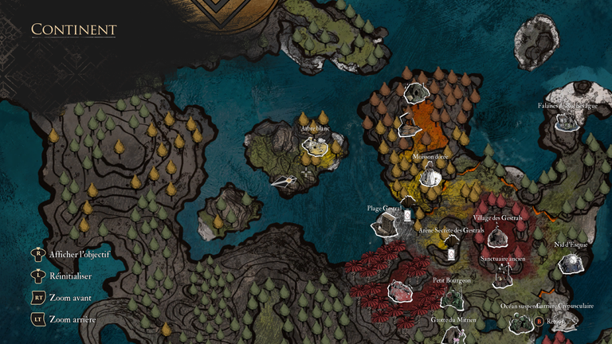
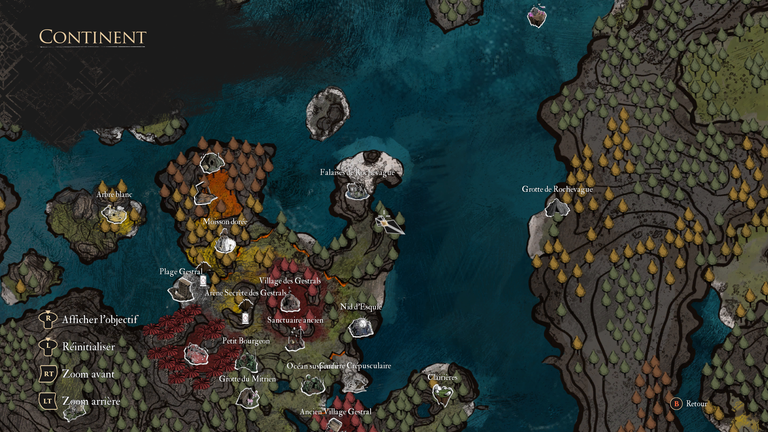
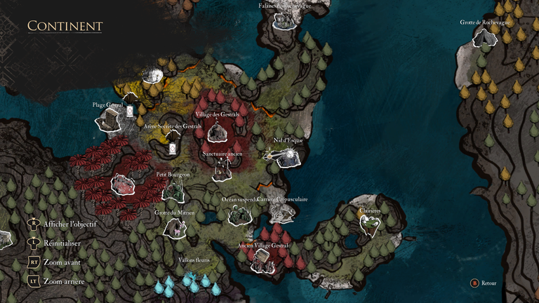
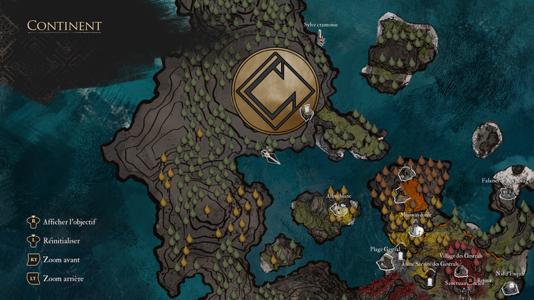
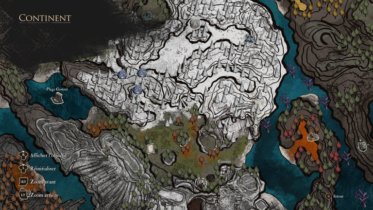
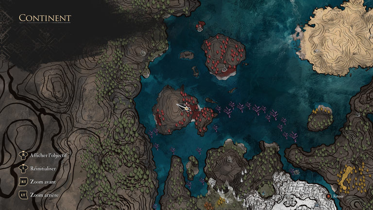
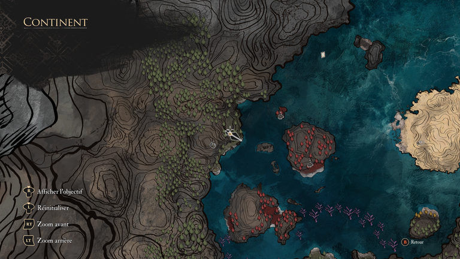
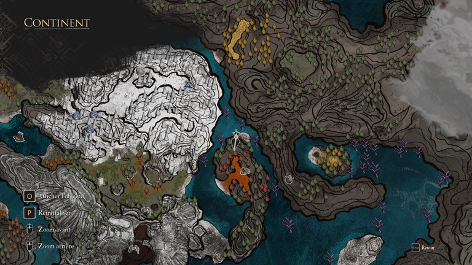

Gestrals Perdus
Voici la liste et l'emplacement des Gestrals Perdus

Voici la liste et l'emplacement des Gestrals Perdus
| Image | Zone | Description |
|---|---|---|
|  | Arbre Blanc | Partie Ouest de l'île |
|  | Continent - Entrée des Falaises de Rochevague | Le Gestral est bloqué par un Bourgeon que vous devrez vaincre avant de le récupéré |
|  | Devant le Nid d'Esquie | Il est devant, vraiment JUSTE devant VOUS ! |
|  | Sur une île dans le ciel au sud de la Tour Eternelle | Il n'est pas facile à trouver, et vous aurez besoin du Vol d'Esquie afin de le récupéré |
|  | Gare de Monoco | Pas loin du marchand à l'ouest de l'entrée |
 |
Zone Cramoisie à l'est du continent | La zone est proche du Sanctuaire de la nuit éternel |
|  | Nord-Ouest du Continent | Au Sud de Visages sur uen île cramoisie caché dérriere deux mimes |
|  | Continent | Il est proche du Gestral N°7, un peu au Nord de celui ci, à côté d'un marchand |
|  | Est de la Gare de Monoco | Au nord de l'île orangée |